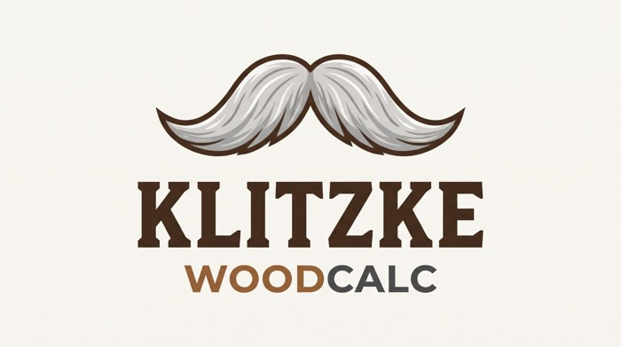

Gráfico de Keylwerth
A tabela é o instrumento didático principal. O cálculo oferece uma estimativa matemática para conferência.

A tabela é o instrumento didático principal. O cálculo oferece uma estimativa matemática para conferência.
Modelo de Hailwood–Horrobin e equações psicrométricas aproximadas. Valores numéricos podem diferir da leitura visual do diagrama; a exibição não substitui medições experimentais.